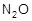
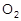
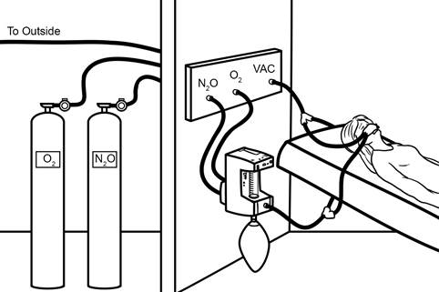

Part B
Constructed-Response
Questions 11 to 25
Show all the work and units needed to solve the
problem. You will be given no marks if you provide the right
answer without showing your work. Significant figures
will be evaluated in question 25 only. |
|
11. An anesthetic agent is a type of medicine
used to control pain during surgery. Nitrous oxide,, has been used since the 1840’s as a mild anesthetic in
dental surgery. Side effects of includes nausea,
headaches and vomiting. Today a mixture of 30 % and 70 % oxygen
gas,, is used on patients. The and gases are stored in
tanks and administered in exact doses by a machine. The patient wears a mask with two
tubes. One tube administers the gaseous mixture, while the vacuum tube
removes the exhaled gas. The exhaled gas mixture includes. Anesthesia
Apparatus  |